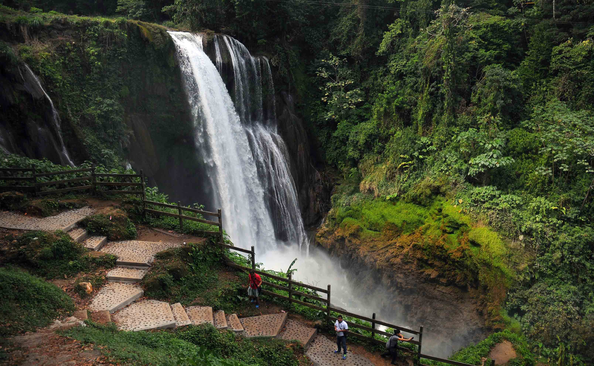

<ion-content>
  <ion-content>
    <ion-fab vertical="top" horizontal="end" slot="fixed">
      <ion-button (click)="createNewTravel()">
        <ion-icon name="chevron-down"></ion-icon>
        <ion-label color="dark">¿A donde vas?</ion-label>
      </ion-button>
    </ion-fab>
    <br>
    <br>
    <br>
    <ion-text  color="ligth">
      <h5>Recomendaciones para ti</h5>
    </ion-text>

    <br>

    <ion-card>
      <ion-card-header>
        <ion-card-subtitle>Santa Cruz de Yojoa</ion-card-subtitle>
        <ion-card-title>Pulhapanzak</ion-card-title>
        
      </ion-card-header>
    
      <ion-card-content>
        Las Cataratas Pulhapanzak son unas cataratas sobre el Río Lindo que se encuentran en la República de Honduras.
         Situada al Norte del Lago de Yojoa, es considerada una de las más bellas cascadas de Centro América 
         por sus aguas cristalinas y una catarata de 43 m de altura.
      </ion-card-content>
      <ion-button class="button-custom" (click)="gotoPlaceActivities()">Ver actividades</ion-button>
    </ion-card>

    <ion-card>
      <ion-card-header>
        <ion-card-subtitle>Santa Cruz de Yojoa</ion-card-subtitle>
        <ion-card-title>Panacam</ion-card-title>
        
      </ion-card-header>
    
      <ion-card-content>
        El Panacam Lodge está situado en Santa Cruz de Yojoa y ofrece alojamiento con WiFi gratuita y TV de pantalla plana,
         así como un restaurante y un jardín. El lodge sirve un desayuno americano. El Panacam Lodge dispone de terraza.
      </ion-card-content>
      <ion-button class="button-custom">Ver actividades</ion-button>
    </ion-card>

  </ion-content>